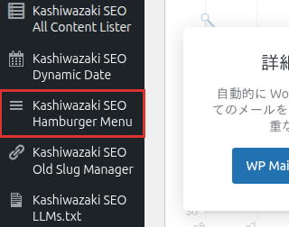

インストール・初期設定
Kashiwazaki SEO Hamburger Menu のインストールから初期設定までの手順を説明します。
インストール方法
1
WordPress 管理画面にログインし、左メニューから プラグイン > 新規追加 をクリックします。

2
プラグインのアップロード をクリックし、ダウンロードした ZIP ファイルを選択してアップロードします。
3
今すぐインストール をクリックし、インストール完了後に 有効化 をクリックします。
ヒント
FTP を使用する場合は、ZIP ファイルを解凍して kashiwazaki-seo-hamburger-menu フォルダを /wp-content/plugins/ ディレクトリにアップロードし、管理画面のプラグイン一覧から有効化してください。
初期設定
プラグインを有効化すると、WordPress 管理画面の左メニューに Hamburger Menu の設定項目が表示されます。
1
管理画面の左メニューから Hamburger Menu をクリックして設定画面を開きます。
2
ブレークポイント を設定します。指定したピクセル幅以下の画面でハンバーガーメニューが表示されます（例: 768px でタブレット以下に表示）。
3
メニューソース を選択します。既存の WordPress メニューを使用するか、カスタムメニュー項目を設定するかを選べます。
4
設定を保存 をクリックして初期設定を完了します。
動作要件
| 項目 | 要件 |
|---|---|
| WordPress | 5.0 以上 |
| PHP | 7.0 以上 |
| 権限 | manage_options（管理者） |
データ保存について
設定データは wp_options テーブルの kshm_options キーに保存されます。カスタムテーブルは作成されません。外部通信も行いません。
セキュリティ
本プラグインは以下のセキュリティ対策を実装しています。
- nonce 検証: フォーム送信時にリクエストの正当性を検証
- 権限チェック: manage_options 権限を持つユーザーのみ設定変更が可能
- 入力サニタイズ: sanitize_text_field および sanitize_hex_color による入力値の無害化